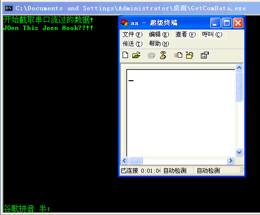

串口过滤
文章目录
终于鸟枪换炮, 可以写点东西了. Windows驱动编程详解从12章后面基本上就是讲各种硬件的开发了, 先放放, 还是以内核模块的开发为主. 所以可以敲寒江独钓上面的代码了, 早先8月份就把寒江独钓看完了, 一直都忍住了敲几行代码的冲动, 一步一步的先学了保护模式, 然后把这个Windows驱动编程详解的代码也敲得差不多了. 可以开始寒江独钓了. 我是这样想的, 所以从最简单的串口过滤开始..
寒江独钓里面的串口过滤只写了内核这边的代码, 截获出来只能够在R0里面显示, 这肯定不是我们所想要的, 正常的应该把这个搞复杂一点, 建立和R3的通信. 把截获到的串口数据发送到R3这边.. 显示出来. 哈哈..
最近这两次的代码都遇到了比较难调试的bug. 不是语法错误, 而是在设置设备属性的时候把|= 写成了=我倒.. 在串口过滤的时候也设置属性的时候也把要设置属性的设备搞错了.这个Bug很难查找, 不会在设置的时候有问题, 但是如果一旦在下发Irp请求的时候就会遇到问题. 所以啊. 这个问题一定要切记, 切记..
另外就没有什么好说的了. 主要说说这个串口和R3通信这边的问题. 因为寒江独钓上已经有了关于串口截获的代码, 说的也很详细, 本身也是比较简单的, 这里主要是需要注意R3通信这边, 和R3通信的时候R3那边的Irp要先挂起来, 然后在串口有数据到达的时候, 获得数据, 再将该Irp完成..所以相对寒江独钓里面搞的那个代码还是多了点复杂度, 另外在读取Irp里面我设置了一个取消例程, 这样就不需要在卸载设备的时候.再等待了.
其他也就没有什么好说的.. 有图有真相..
http://www.joenchen.com/JoenTools/ComCap.rar

这边是用户态的代码:循环读取设备:
/* Windows 内核下串口过滤设备的简单演示 应用层代码 编译方法参见makefile. TAB = 8 */ #include <windows.h> #include <tchar.h> #include <stdio.h> #include <locale.h>
#pragma comment( linker, “/Entry:Jmain” )
//=========================================================================== //串口过滤, 主函数 //=========================================================================== int Jmain( ) { ULONG i; HANDLE hDevice= NULL; _TCHAR tcBuf[10]; DWORD dwByteRead; BOOL bRet;
setlocale(LC\_ALL, "chs" );
hDevice = CreateFile( \_T("\\\\\\\\.\\\\SysLinkComCap"), GENERIC\_READ|GENERIC\_WRITE, 0,
NULL,OPEN\_EXISTING, FILE\_ATTRIBUTE\_NORMAL, NULL );
if ( hDevice == INVALID\_HANDLE\_VALUE ) {
wprintf( \_T("打开设备失败\\n") );
return -1;
}
wprintf( \_T( "开始截取串口流过的数据!\\n") );
while ( 1 ) {
RtlZeroMemory(tcBuf, sizeof(tcBuf));
bRet = ReadFile(hDevice,tcBuf, sizeof(tcBuf), &dwByteRead, NULL );
if ( !bRet ) {
wprintf( \_T("串口读取完成!\\n"));
break;
}else {
for( i = 0; i < dwByteRead; i++ ) {
wprintf( \_T( "%c" ), tcBuf\[i\] );
}
}
}
return 0;
}
这边是内核态的代码:
/* Windows 内核下串口过滤设备的简单演示 驱动程序代码 编译方法参见makefile. TAB = 8 */
#include <ntddk.h> #include <wdm.h> #include <ntstrsafe.h> #include <process.h>
#define CCP_MAX_COM_ID 32
#define DEVICE_NAME L"\\Device\\DevComCap" #define SYS_LINK_NAME L"\\??\\SysLinkComCap"
typedef struct tagDeviceExt { ULONG bFlags; //TRUE表示过滤设备, FALSE就是我们自己的设备了 PIRP pCurrentIrp; PDEVICE_OBJECT pDeviceObj; PDEVICE_OBJECT pLowDeviceObj; UNICODE_STRING USzDeviceName; UNICODE_STRING USzSysLinkName; } DEVICE_EXT, *PDEVICE_EXT; //=========================================================================== //驱动卸载例程 //=========================================================================== VOID DriverUnLoad( PDRIVER_OBJECT pDriverObj ) { PDEVICE_EXT pDeviceExt = NULL; PDEVICE_OBJECT pNextDeviceObj = NULL;
pNextDeviceObj = pDriverObj->DeviceObject;
//————————————————————————— //遍历所有的设备进行取消绑定, 删除 //————————————————————————— while ( pNextDeviceObj != NULL ) { pDeviceExt = pNextDeviceObj->DeviceExtension;
//如果当前还有Irp处理, 那么取消
if ( pDeviceExt->pCurrentIrp ) {
IoCancelIrp( pDeviceExt->pCurrentIrp );
}
//如果有符号链接, 删除
if ( ( pDeviceExt->USzSysLinkName ).Buffer ) {
IoDeleteSymbolicLink( &( pDeviceExt->USzSysLinkName ) );
}
//取消绑定
if ( pDeviceExt->pLowDeviceObj ) {
IoDetachDevice( pDeviceExt->pLowDeviceObj );
}
//删除设备
IoDeleteDevice( pDeviceExt->pDeviceObj );
pNextDeviceObj = pNextDeviceObj->NextDevice;
if ( ( pDeviceExt->USzDeviceName ).Buffer ) {
KdPrint ( ( "删除%wZ设备成功!\\n", &( pDeviceExt->USzDeviceName ) ) );
} else {
KdPrint ( ( "删除过滤设备成功!\\n" ) );
}
}
} //=========================================================================== //写入Irp处理例程 //=========================================================================== NTSTATUS DispatchWrite( PDEVICE_OBJECT pDeviceObj, PIRP pIrp ) { ULONG ulBufLen, j; ULONG ulUserBufLen; PUCHAR pBuf = NULL; PUCHAR pUserBuf = NULL; PDEVICE_EXT pDeviceExt = NULL; PDEVICE_OBJECT pNextDevice = NULL; PIO_STACK_LOCATION pStack = NULL; PIO_STACK_LOCATION pUserStack = NULL;
//————————————————————————— pStack = IoGetCurrentIrpStackLocation( pIrp );
//获取写长度
ulBufLen = pStack->Parameters.Write.Length;
//获取缓冲区
if( pIrp->MdlAddress != NULL ) {
pBuf = ( PUCHAR )MmGetSystemAddressForMdlSafe( pIrp->MdlAddress , NormalPagePriority );
} else {
pBuf = ( PUCHAR )pIrp->UserBuffer;
}
if( pBuf == NULL ) {
pBuf = ( PUCHAR )pIrp->AssociatedIrp.SystemBuffer;
}
KdPrint ( ( "写入Irp处理例程!\\n" ) );
//打印数据
for( j = 0; j < ulBufLen; j++ ) {
KdPrint( ( "数据: 0x%X %c\\n", pBuf\[j\], pBuf\[j\] ) );
}
//————————————————————————— //如果与我们通信的3环Irp被挂起了, 那么这里就可以返回了 //————————————————————————— pNextDevice = ( pDeviceObj->DriverObject )->DeviceObject;
while ( pNextDevice != NULL ) {
pDeviceExt = pNextDevice->DeviceExtension;
ASSERT( pDeviceExt );
if ( pDeviceExt->pCurrentIrp ) {
//获取R3那边读取请求的Irp
pUserStack = IoGetCurrentIrpStackLocation( pDeviceExt->pCurrentIrp );
//缓冲区长度
ulUserBufLen = pUserStack->Parameters.Write.Length;
//映射R3那边的地址到高2G这边来
pUserBuf = MmGetSystemAddressForMdlSafe( pDeviceExt->pCurrentIrp->MdlAddress,
NormalPagePriority );
//如果缓冲区传递错误了
if ( !pUserBuf ) {
pDeviceExt->pCurrentIrp->IoStatus.Status = STATUS\_INVALID\_PARAMETER;
pDeviceExt->pCurrentIrp->IoStatus.Information = 0;
} else {
//如果用户态那边的缓冲区太少, 返回错误
if ( ulUserBufLen < ulBufLen ) {
pDeviceExt->pCurrentIrp->IoStatus.Status = STATUS\_BUFFER\_TOO\_SMALL;
pDeviceExt->pCurrentIrp->IoStatus.Information = 0;
} else {
//条件都够了那么就Copy内存过去
RtlCopyMemory( pUserBuf, pBuf, ulBufLen );
pDeviceExt->pCurrentIrp->IoStatus.Status = STATUS\_SUCCESS;
pDeviceExt->pCurrentIrp->IoStatus.Information = ulBufLen;
}
}
IoCompleteRequest( pDeviceExt->pCurrentIrp, IO\_NO\_INCREMENT );
pDeviceExt->pCurrentIrp = NULL;
pDeviceExt = NULL;
break;
}
//遍历下一个设备
pNextDevice = pNextDevice->NextDevice;
}
//————————————————————————— // 这些请求直接下发执行即可, 需要其他处理, 这里搞 IoSkipCurrentIrpStackLocation( pIrp ); pDeviceExt = pDeviceObj->DeviceExtension;
ASSERT( pDeviceExt->pLowDeviceObj );
return IoCallDriver( pDeviceExt->pLowDeviceObj, pIrp );
}
//=========================================================================== //R3那边发送的读取Irp取消例程 //=========================================================================== VOID OnCancelIRP( PDEVICE_OBJECT pDeviceObj, PIRP pIrp ) { PDEVICE_EXT pDeviceExt = NULL;
//释放Cancel自旋锁
IoReleaseCancelSpinLock( pIrp->CancelIrql );
pDeviceExt = pDeviceObj->DeviceExtension;
ASSERT( pDeviceExt );
if ( pDeviceExt->pCurrentIrp == pIrp ) {
pDeviceExt->pCurrentIrp = NULL;
}
//设置完成状态为STATUS\_CANCELLED
pIrp->IoStatus.Status = STATUS\_CANCELLED;
pIrp->IoStatus.Information = 0;
IoCompleteRequest( pIrp, IO\_NO\_INCREMENT );
} //=========================================================================== //R3那边过来读取请求. 将其挂起 //=========================================================================== NTSTATUS DispatchRead( PDEVICE_OBJECT pDeviceObj, PIRP pIrp ) { NTSTATUS Status; PDEVICE_EXT pDeviceExt = NULL;
PAGED\_CODE();
pDeviceExt = pDeviceObj->DeviceExtension;
ASSERT( pDeviceExt );
//————————————————————————— //这边请求也有我们自己创建的设备发送的和, 过滤发送的这里注意区别 //————————————————————————— if ( !pDeviceExt->bFlags ) {
pDeviceExt->pCurrentIrp = pIrp;
//将IRP设置为挂起
IoMarkIrpPending( pIrp );
//设置取消例程
IoSetCancelRoutine( pIrp, OnCancelIRP );
KdPrint ( ( "R3读取请求来了一次!\\n" ) );
//返回pending状态
Status = STATUS\_PENDING;
} else {
KdPrint ( ( "过滤了一次读取请求!\\n" ) );
IoSkipCurrentIrpStackLocation( pIrp );
Status = IoCallDriver( pDeviceExt->pLowDeviceObj, pIrp );
}
return Status;
} //=========================================================================== //所有不关心的Irp处理 //=========================================================================== NTSTATUS DispatchRoutine( PDEVICE_OBJECT pDeviceObj, PIRP pIrp ) { NTSTATUS Status; PDEVICE_EXT pDeviceExt = NULL; PIO_STACK_LOCATION pStack = NULL;
pStack = IoGetCurrentIrpStackLocation( pIrp );
pDeviceExt = pDeviceObj->DeviceExtension;
//前面我们创建的设备是不会有这个消息的
if( pStack->MajorFunction == IRP\_MJ\_POWER ) {
//直接跳过当前堆栈, 发送给下层设备
PoStartNextPowerIrp( pIrp );
IoSkipCurrentIrpStackLocation( pIrp );
KdPrint ( ( "电源Irp来了一次!\\n" ) );
Status = PoCallDriver( pDeviceExt->pLowDeviceObj, pIrp );
} else {
KdPrint ( ( "不关心的Irp来了一次!\\n" ) );
pIrp->IoStatus.Status = STATUS\_SUCCESS;
pIrp->IoStatus.Information = 0;
if ( pDeviceExt->bFlags ) {
// 这些请求直接下发执行即可
IoSkipCurrentIrpStackLocation( pIrp );
Status = IoCallDriver( pDeviceExt->pLowDeviceObj, pIrp );
} else {
IoCompleteRequest( pIrp, IO\_NO\_INCREMENT );
Status = STATUS\_SUCCESS;
}
}
return Status;
} //=========================================================================== // 绑定串口设备 //=========================================================================== NTSTATUS _AttachDevice( PDEVICE_OBJECT pDeviceObj, PDEVICE_OBJECT pTargetDevObj ) { NTSTATUS Status; PDEVICE_EXT pDeviceExt = NULL; PDEVICE_OBJECT pLowDeviceObj = NULL;
//获取设备扩展
pDeviceExt = pDeviceObj->DeviceExtension;
ASSERT( pDeviceExt );
Status = IoAttachDeviceToDeviceStackSafe( pDeviceObj, pTargetDevObj,
&( pDeviceExt->pLowDeviceObj ) );
if ( !NT\_SUCCESS( Status ) ) {
KdPrint ( ( "绑定设备失败!\\n" ) );
return Status;
}
//设置过滤设备属性(很重要)
pDeviceObj->DeviceType = pTargetDevObj->DeviceType;
pDeviceObj->Characteristics = pTargetDevObj->Characteristics;
pDeviceObj->Flags &= ~DO\_DEVICE\_INITIALIZING;
pDeviceObj->Flags |= DO\_POWER\_PAGABLE;
pDeviceObj->Flags |= pTargetDevObj->Flags & ( DO\_DIRECT\_IO | DO\_BUFFERED\_IO );
return STATUS\_SUCCESS;
} //=========================================================================== //创建设备用于和R3通信 //pDriverObj 驱动对象指针 //pDeviceObjName 设备对象名称 //pSysLinkName 设备对象的符号链接名称(可以为NULL) //bFlags 是否是绑定设备的标记 //pDeviceObj 二级指针, 用于返回设备对象 //=========================================================================== NTSTATUS _CreateDevice( PDRIVER_OBJECT pDriverObj, PUNICODE_STRING pDeviceObjName, PUNICODE_STRING pSysLinkName, ULONG bFlags, PDEVICE_OBJECT* pDeviceObj ) {
NTSTATUS Status;
PDEVICE\_EXT pDeviceExt = NULL;
Status = IoCreateDevice( pDriverObj, sizeof( DEVICE\_EXT ), pDeviceObjName,
FILE\_DEVICE\_UNKNOWN, 0, TRUE, pDeviceObj );
if ( !NT\_SUCCESS( Status ) ) {
KdPrint ( ( "创建%wZ设备失败!\\n", pDeviceObjName ) );
return Status;
}
if ( pSysLinkName ) {
Status = IoCreateSymbolicLink( pSysLinkName, pDeviceObjName );
if ( !NT\_SUCCESS( Status ) ) {
KdPrint ( ( "创建%wZ符号链接失败!\\n", pSysLinkName ) );
IoDeleteDevice( \*pDeviceObj );
return Status;
}
}
pDeviceExt = ( \*pDeviceObj )->DeviceExtension;
ASSERT( pDeviceExt );
//设置设备属性, 因为这个设备不是过滤设备, 所以bFlags为False
RtlZeroMemory( pDeviceExt, sizeof( DEVICE\_EXT ) );
pDeviceExt->pDeviceObj = \*pDeviceObj;
pDeviceExt->bFlags = bFlags;
if ( pDeviceObjName ) {
pDeviceExt->USzDeviceName = \*pDeviceObjName;
}
if ( pSysLinkName ) {
pDeviceExt->USzSysLinkName = \*pSysLinkName;
}
return Status;
}
//=========================================================================== //绑定所有的串口设备 //pDriverObj 驱动对象 //=========================================================================== VOID _AttachAllComs( PDRIVER_OBJECT pDriverObj ) { ULONG i; NTSTATUS Status; WCHAR wSzName[32]; UNICODE_STRING USzName; PDEVICE_OBJECT pDeviceObj = NULL; PFILE_OBJECT pTargetFileObj = NULL; PDEVICE_OBJECT pTargetDevObj = NULL;
for( i = 0; i < CCP\_MAX\_COM\_ID; i++, pTargetDevObj = NULL, pDeviceObj = NULL ) {
RtlZeroMemory( &wSzName, sizeof( wSzName ) );
RtlStringCchPrintfW( wSzName, sizeof( wSzName ), L"\\\\Device\\\\Serial%d", i );
RtlInitUnicodeString( &USzName, wSzName );
//通过设备名称获取到对象的指针
Status = IoGetDeviceObjectPointer( &USzName, FILE\_ALL\_ACCESS,
&pTargetFileObj, &pTargetDevObj );
if ( Status == STATUS\_SUCCESS ) {
//绑定成功这里要马上释放文件对象句柄
ObDereferenceObject( pTargetFileObj );
}
if( pTargetDevObj == NULL ) {
KdPrint( ( "设备无效绑定失败: %wZ\\n", &USzName ) );
continue;
}
Status = \_CreateDevice( pDriverObj, NULL, NULL, TRUE, &pDeviceObj );
if ( !NT\_SUCCESS( Status ) ) {
KdPrint ( ( "创建过滤设备失败!\\n" ) );
continue;
}
ASSERT( pDeviceObj != NULL );
//绑定底层串口设备
Status = \_AttachDevice( pDeviceObj, pTargetDevObj );
if ( !NT\_SUCCESS( Status ) ) {
if ( pDeviceObj ) {
IoDeleteDevice( pDeviceObj );
}
continue;
}
KdPrint( ( "绑定了设备:%wZ!\\n", &USzName ) );
}
} //=========================================================================== //驱动入口 //=========================================================================== #pragma code_seg( “INIT”, “DriverEntry” ) NTSTATUS DriverEntry( PDRIVER_OBJECT pDriverObj, PUNICODE_STRING pUSzRegPath ) { ULONG i; NTSTATUS Status; PDEVICE_OBJECT pDeviceObj = NULL; UNICODE_STRING USzDeviceName = RTL_CONSTANT_STRING( DEVICE_NAME ); UNICODE_STRING USzSysLinkName = RTL_CONSTANT_STRING( SYS_LINK_NAME );
//————————————————————————— Status = _CreateDevice( pDriverObj, &USzDeviceName, &USzSysLinkName, FALSE, &pDeviceObj );
if ( !NT\_SUCCESS( Status ) ) {
KdPrint ( ( "创建通信设备失败!\\n" ) );
return Status;
}
KdPrint ( ( "%wZ设备创建成功!\\n", &USzDeviceName ) );
//设备缓冲区操作方式
pDeviceObj->Flags |= DO\_DIRECT\_IO;
//绑定所有的串口设备
\_AttachAllComs( pDriverObj );
//————————————————————————— //设置分发函数例程 for( i = 0; i < IRP_MJ_MAXIMUM_FUNCTION; i++ ) { pDriverObj->MajorFunction[i] = &DispatchRoutine; }
pDriverObj->MajorFunction\[IRP\_MJ\_READ\] = &DispatchRead;
pDriverObj->MajorFunction\[IRP\_MJ\_WRITE\] = &DispatchWrite;
pDriverObj->DriverUnload = &DriverUnLoad;
//—————————————————————————
KdPrint ( ( "驱动入口执行完毕!\\n" ) );
return Status;
}
文章作者 忆杰
上次更新 2011-11-24